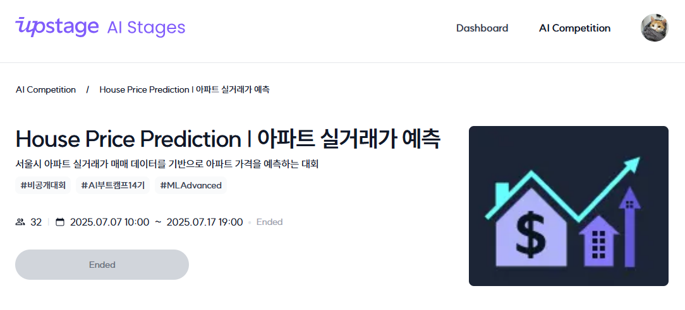

커널 아카데미 AI Lab #005 24–38일차 MachineLearning Regression 대회
2025.06.27.(FRI)
MachineLearning
24일차부터 28일차까지 2주간은 온라인 녹화 강의 수강 시간이 주어졌다 (중간에 오영석 멘토님과 이호민 멘토님의 라이브 세션도 1회씩 진행되었다). 녹화강의는 ML basic과 ML advance로 나뉘어 있었다. ML basic에서는 인공지능/머신러닝/딥러닝에 대한 간략한 설명과 모델과 데이터에 대한 설명, 지도학습과 비지도학습 및 모델 평가와 개선에 대한 설명들이 주어졌고, ML advance에서는 EDA와 전처리, 파생변수 생성 및 데이터 분할과 평가 등에 대한 설명이 주어졌다.
대회 소개
29일차부터 38일차까지 2주간은 이번 교육과정의 첫 번째 경진대회인 아파트 실거래가 예측 대회가 진행되었다. 대회 플랫폼은 Upstage의 AI stages이며, 대회는 교육과정 내부 대회로 진행되었다. 대회 내용은 최근 수 십 년 간의 서울 아파트 거래 정보 데이터가 주어질 때, 이를 통해 머신러닝을 진행하고, 해당 데이터 외 서울 소재 아파트에 대한 정보가 주어질 때 그 거래 가격을 예측하는 것이었다.팀은 5명이 한 팀을 이루었으며, 내가 팀장을 맡게 되었다.
대회 진행
우선 주어진 데이터들의 특성을 파악하고자 문서를 열고 데이터들을 확인해보았다. 그 결과 거래 아파트의 좌표 정보가 80%에 가까운 높은 결측 비율을 보여주는 것을 발견했다. 대신 아파트의 이름과 도로명 주소가 주어져 있었기에 이를 이용해 국토교통부가 제공하는 VWorld Geocoder API를 호출하여 좌표 정보 결측치를 채워주었다.
이에 더해 추가 데이터와 파생변수를 생성하여 모델의 성능을 끌어올리기로 했는데, 첫 번째는 방금의 좌표 데이터를 이용한 한강 인접도였다. 특별히 수학적인 이유가 있는 것은 아니였고 단순하게 한강에 인접한 아파트는 더 비쌀 것이라는 통념에 의거한 파생변수였다. 한강 인접도는 한강에 가까울수록 매우 크며 한강에서 일정 수준 이상으로 멀어지면 영향이 미미해질 것이라 예측하고 한강으로부터의 거리의 제곱의 역수로 계산하였다. 단, 이렇게 계산하면 한강에 매우 가깝게 인접한 경우 이 값이 지나치게 높아지는 문제가 있어 한강으로부터 거리는 실제 값에 약간의 보정치를 더해 계산하도록 하였다.
두 번째 파생 변수로 서울 중심도를 생성하였다. 이 역시 서울의 중심부 번화가에 가까울수록 아파트의 가격이 더 비쌀 것이라는 사회 통념에 의거한 선택이였다. 다만 서울의 번화가는 중심지에서 가장 활성화 되어있고 가장자리로 갈수록 덜 활성화 되어있는 선형 구조가 아닌, 여기 저기 산발적으로 번화가가 분포한 구조라고 판단하여, chatGPT의 추천을 기반으로 서울역, 강남역, 광화문, 삼성역, 여의도를 중심점으로 삼고, 한강 인접도와 마찬가지로 보정치를 포함한 거리의 제곱의 역수로 계산했다
다음으로는 추가 변수로 토지 가치를 생성하였다. 주어진 데이터상 아파트의 전용면적에는 결측치가 거의 없었고, VWorld API를 이용하면 공시지가 데이터를 읽어올 수 있었기에 이 둘을 곱해 토지가치 데이터를 생성할 수 있었다.
이외에도 버스 정류장 인접도와 지하철역 인접도도 데이터에 추가해준 뒤 RandomForest 모델을 기반으로 학습 및 추론을 진행했다. 이러한 과정을 통해 로컬 RMSE 점수를 5840에서 4700까지 줄였고, 중간 채점 RMSE도 45000에서 41000까지 줄일 수 있었다. 대회 막바지에는 성능이 더 개선되지 않자 조급한 마음에 변수를 닥치는대로 생성하거나 반대로 닥치는대로 제거하고 모델을 바꾸는 등 여러 시도를 했지만 점수는 제자리걸음에 그쳤다.
대회 결과
최종 채점 결과가 발표되었고, 중간 채점까지 전체 7팀 중 4위를 하고 있던 우리 팀은 이변 없이 최종 채점에서도 4위를 기록하였다. 최종 RMSE 점수는 26948.5050였다.
세미나
우리 팀의 발표 자료는 다음과 같다.
(파일 추가 예정)
발표는 최종 순위의 역순으로 진행되었다. 우리보다 높은 등수를 기록한 팀들의 발표를 유심히 들었는데, 그 중에서도 압도적 1위를 한 팀(RMSE 점수 13091.1472)의 발표에서 몇 가지 인사이트를 얻을 수 있었다. 이들은 결측치 비율이 높은 데이터들은 모델을 혼란스럽게 하고 추론을 어렵게 만든다 판단하여 대범하게 삭제하고 10가지 이내의 핵심변수들만 남기는 전략을 사용했다. 그리고 스타벅스, 맥도날드 등의 프랜차이즈 입점 정보를 통한 상권분석을 진행했고 학군 및 랜드마크 등의 위치 정보도 이용했다. LASSO 회귀분석, 잔차 분석, 공변량 시프트 등 수학적인 방법을 이용한 데이터 분석 및 전처리 또한 진행했다.
후기
첫 번째 경진대회를 중위권으로 마무리했지만 그 과정에서 즐거움을 느꼈고, 외부 API를 통한 결측치 보강, 데이터 추가 및 파생변수 생성 등 여러 가지 ML 기법들을 체험해볼 수 있어서 좋은 경험이 되었다. 다만 1위 팀의 전문적인 모습에 주눅이 들기도 했다. 다음 대회는 더 높은 순위를 꼭 달성해야겠다는 생각이 들었다.